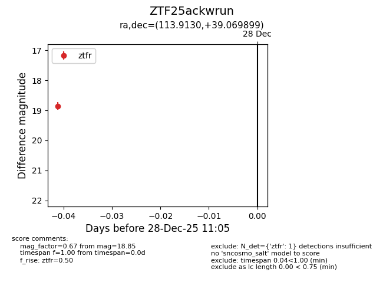
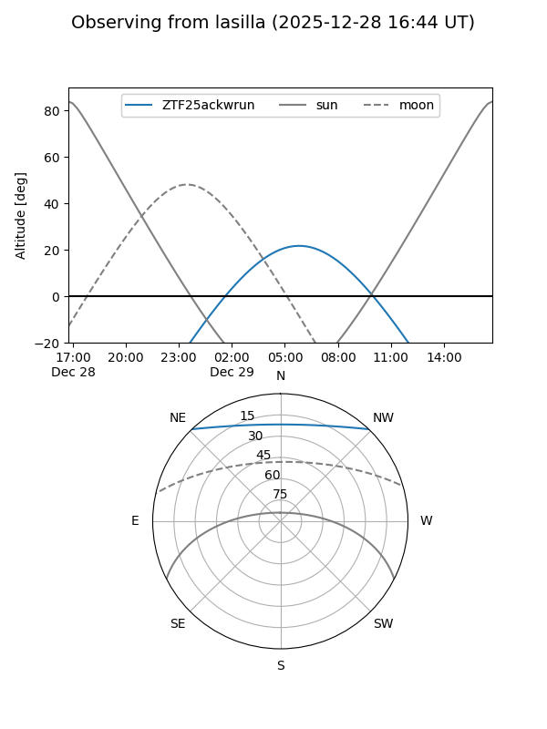
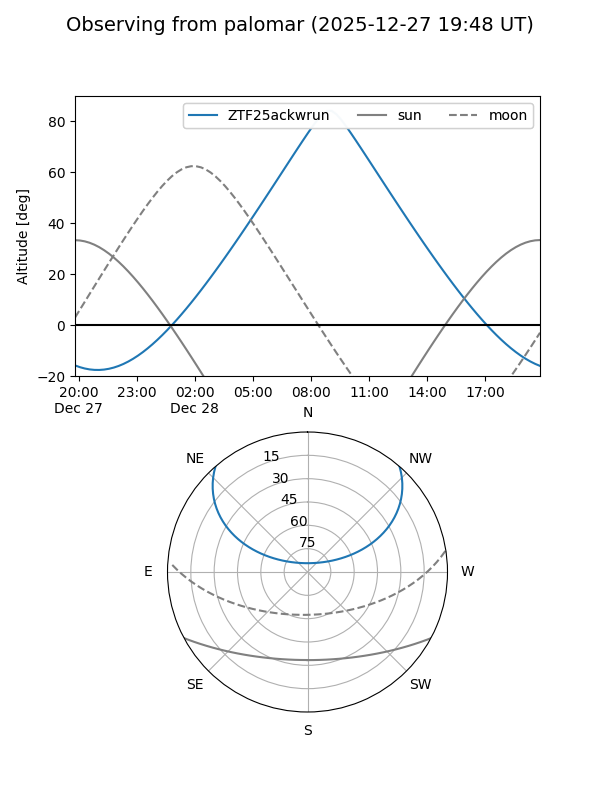

ZTF25ackwrun
Target ZTF25ackwrun at 2025-12-28 11:06
Aliases and brokers:
FINK: fink-portal.org/ZTF25ackwrun
Lasair: lasair-ztf.lsst.ac.uk/objects/ZTF25ackwrun
ALeRCE: alerce.online/object/ZTF25ackwrun
alt names
ZTF25ackwrun (ztf,fink_ztf)
Coordinates:
equatorial (ra, dec) = 113.9130,+39.06990
equatorial (HMS+DMS) = 07:35:39.13,+39:04:11.64
galactic (l, b) = (180.0259,+24.82629)
Flags:
Photometry:
last ztfr=18.85
1 ztfr detections
Lightcurve

Visibility


Additional plots